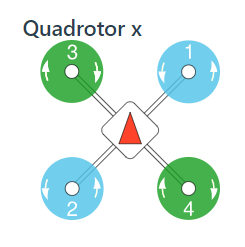

常见问题¶
PX4无电流计使用
CBRK_SUPPLY_CHK设置为894281
PX4禁用安全开关
CBRK_IO_SAFETY设置为22027四旋翼机架定义

gazebo仿真启动失败时，杀掉有关gazebo服务器的所有进程：
top #查看进程 kill [PID] #PID为进程号
PX4在ROS下进行gazebo仿真¶
安装ROS和Gazebo
完整克隆PX4源码
git clone https://github.com/PX4/PX4-Autopilot.git --recursive
安装MAVROS
编译源码
cd Firmware make px4_sitl_default gazebo #会直接运行
source环境变量和启动仿真环境
source Tools/setup_gazebo.bash $(pwd) $(pwd)/build/px4_sitl_default export ROS_PACKAGE_PATH=$ROS_PACKAGE_PATH:$(pwd) export ROS_PACKAGE_PATH=$ROS_PACKAGE_PATH:$(pwd)/Tools/sitl_gazebo roslaunch px4 posix_sitl.launch #运行了make px4_sitl_default gazebo 就不用运行这个了
启动MAVROS
roslaunch mavros px4.launch fcu_url:="udp://:14540@127.0.0.1:14557"